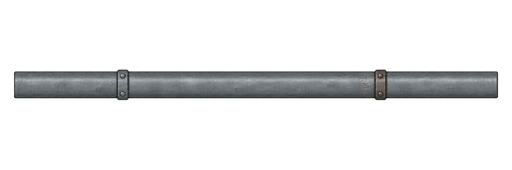
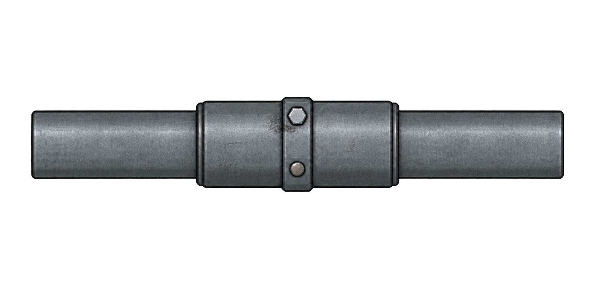

Трубы: пример сборки у стены
Прямая секция → тройник → вентиль → муфта → угол. Настоящие PNG, единый диаметр; стыки совмещены по измеренным портам.




 Обычная геометрия остаётся рабочей. Индивидуальность — в крепеже и локальных следах обслуживания.
Обычная геометрия остаётся рабочей. Индивидуальность — в крепеже и локальных следах обслуживания.Это проверка композиции в браузере. Физические высоты, коллайдеры, освещение и размещение в Unity ещё не настраивались.